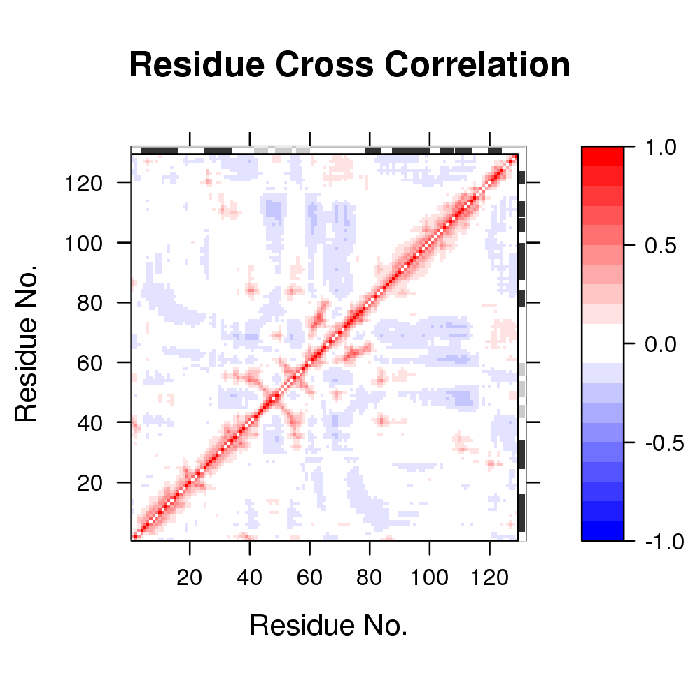
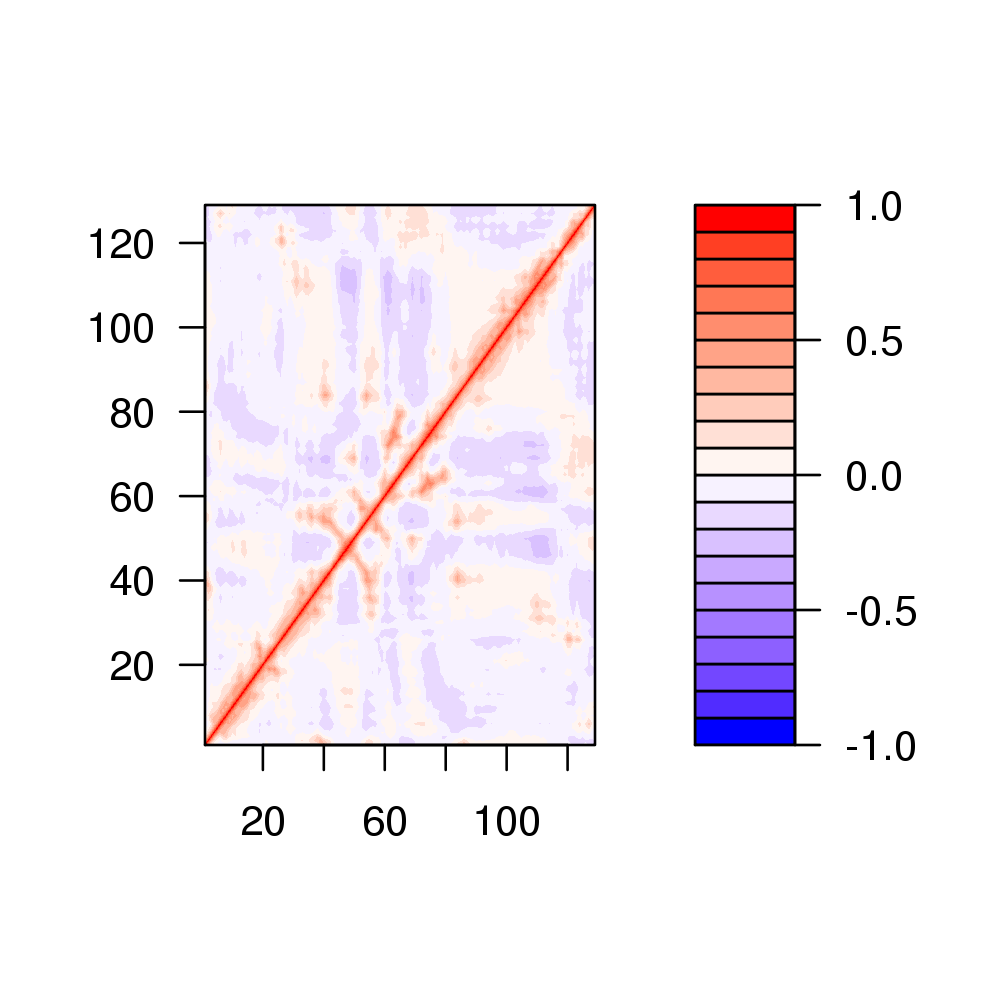

dccm(x, nmodes = NULL, ncore = NULL, ...)
nma as obtained from
function nma. ncore>1 requires multicore package installed. Calculate the cross-correlation matrix from Normal Modes Analysis.
This function calculates the cross-correlation matrix from Normal
Modes Analysis (NMA) obtained from nma of a protein
structure. It returns a matrix of residue-wise cross-correlations
whose elements, Cij, may be displayed in a graphical
representation frequently termed a dynamical cross-correlation
map, or DCCM.
If Cij = 1 the fluctuations of residues i and j are completely correlated (same period and same phase), if Cij = -1 the fluctuations of residues i and j are completely anticorrelated (same period and opposite phase), and if Cij = 0 the fluctuations of i and j are not correlated.
Returns a cross-correlation matrix.
Wynsberghe. A.W.V, Cui, Q. Structure 14, 1647--1653. Grant, B.J. et al. (2006) Bioinformatics 22, 2695--2696.
## Fetch stucture pdb <- read.pdb("1hel")Note: Accessing online PDB file HEADER HYDROLASE(O-GLYCOSYL) 10-JAN-92 1HEL## Calculate normal modes modes <- nma(pdb)Building Hessian... Done in 0.074 seconds. Diagonalizing Hessian... Done in 0.135 seconds.## Calculate correlation matrix cm <- dccm.nma(modes)| |==================================================== | 74% | |==================================================== | 75% | |===================================================== | 75% | |===================================================== | 76% | |====================================================== | 77% | |====================================================== | 78% | |======================================================= | 78% | |======================================================= | 79% | |======================================================== | 79% | |======================================================== | 80% | |======================================================== | 81% | |========================================================= | 81% | |========================================================= | 82% | |========================================================== | 82% | |========================================================== | 83% | |=========================================================== | 84% | |=========================================================== | 85% | |============================================================ | 85% | |============================================================ | 86% | |============================================================= | 86% | |============================================================= | 87% | |============================================================= | 88% | |============================================================== | 88% | |============================================================== | 89% | |=============================================================== | 89% | |=============================================================== | 90% | |=============================================================== | 91% | |================================================================ | 91% | |================================================================ | 92% | |================================================================= | 92% | |================================================================= | 93% | |================================================================= | 94% | |================================================================== | 94% | |================================================================== | 95% | |=================================================================== | 95% | |=================================================================== | 96% | |==================================================================== | 96% | |==================================================================== | 97% | |==================================================================== | 98% | |===================================================================== | 98% | |===================================================================== | 99% | |======================================================================| 99% | |======================================================================| 100%## Plot matrix plot(cm)
## An alternative pretty map: Labpalette = colorRampPalette(c("blue", "white", "red"), space = "Lab") filled.contour( x=1:nrow(cm), y=1:ncol(cm), z=cm, color = Labpalette, levels = pretty( c(-1,1), 20))